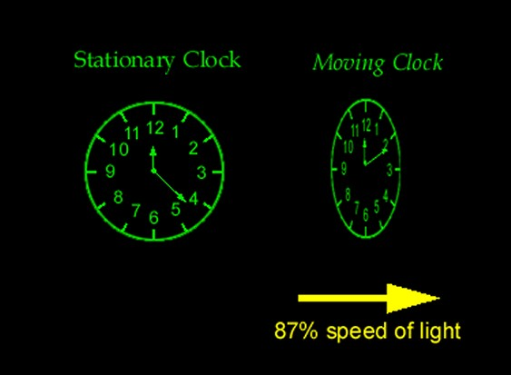

Relativity
 Einstein's "Zur Elektrodynamik bewegter Körper" ("On the Electrodynamics of Moving Bodies") was received on 30 June 1905 and published 26 September of that same year. It reconciles Maxwell's equations for electricity and magnetism with the laws of mechanics, by introducing major changes to mechanics close to the speed of light. This later became known as Einstein's special theory of relativity. Consequences of this include the time–space frame of a moving body appearing to slow down and contract (in the direction of motion) when measured in the frame of the observer. This paper also argued that the idea of a luminiferous aether—one of the leading theoretical entities in physics at the time—was superfluous. In his paper on mass–energy equivalence, Einstein produced E = mc2 from his special relativity equations. Einstein's 1905 work on relativity remained controversial for many years, but was accepted by leading physicists, starting with Max Planck.